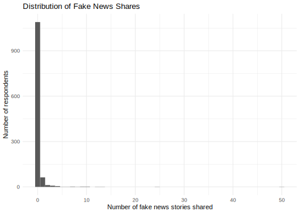
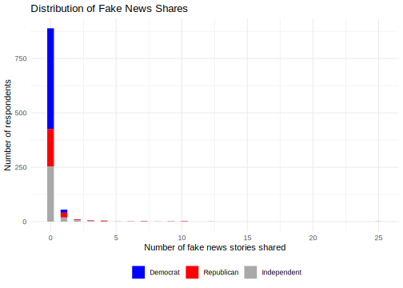
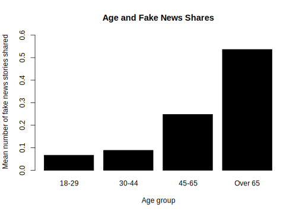
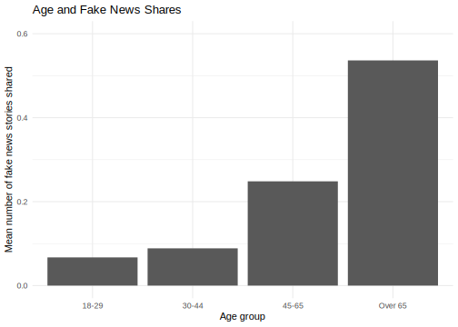

10.7 Week 8 Tutorial
For this week’s tutorial, we will use data from the article, “Less than you think: Prevalence and predictors of fake news dissemination on Facebook” published in Science Advances by Andrew Guess, Jonathan Nagler, and Joshua Tucker available here.
Abstract.So-called “fake news” has renewed concerns about the prevalence and effects of misinformation in political campaigns. Given the potential for widespread dissemination of this material, we examine the individual-level characteristics associated with sharing false articles during the 2016 U.S. presidential campaign. To do so, we uniquely link an original survey with respondents’ sharing activity as recorded in Facebook profile data. First and foremost, we find that sharing this content was a relatively rare activity. Conservatives were more likely to share articles from fake news domains, which in 2016 were largely pro-Trump in orientation, than liberals or moderates. We also find a strong age effect, which persists after controlling for partisanship and ideology: On average, users over 65 shared nearly seven times as many articles from fake news domains as the youngest age group.
The authors look at the demographics predictors of disseminating fake news using survey data and behavioral data on respondents’ Facebook sharing history.
The key outcome variable is num_fake_shares, representing the number of articles an individual shared from a list of fake news domains created by Buzzfeed.
- Key independent variables include
party,ideology(factor),age(factor),female,black,educ,faminc,num_posts
Let’s load the data and look at the outcome.
library(rio)
fake <- import("https://github.com/ktmccabe/teachingdata/blob/main/sciencerep.RData?raw=true")
table(fake$num_fake_shares)
0 1 2 3 4 5 6 7 8 9 10 12 13 25 50
1090 63 12 8 5 1 1 2 1 2 2 1 1 1 1 It looks like our data are a count. Let’s try to visualize this distribution in a histogram. How would you describe this distribution?
library(ggplot2)
ggplot(fake, aes(num_fake_shares))+
geom_histogram(bins=50)+
theme_minimal()+
ggtitle("Distribution of Fake News Shares") +
ylab("Number of respondents") +
xlab("Number of fake news stories shared")
To filter the histogram by party like Fig. 1 in the paper, expand.
library(ggplot2)
fakesub <- subset(fake, party %in% c("Democrat", "Republican", "Independent"))
ggplot(fakesub, aes(num_fake_shares, fill=party))+
geom_histogram(bins=50)+
theme_minimal()+
ggtitle("Distribution of Fake News Shares") +
ylab("Number of respondents") +
scale_fill_manual("", values = c("blue", "red", "darkgray")) +
xlab("Number of fake news stories shared") +
theme(legend.position = "bottom", legend.title = element_blank()) Warning: Removed 1499 rows containing non-finite values (stat_bin).
Let’s say we were interested in exploring the relationship between age and the number of fake news posts. It can always be useful to conduct more descriptive or exploratory analysis before hitting the heavy machinery. For example, the authors look at the average number of fake news posts shared by age group in Figure 2. We can do the same. Ours will look a little different because it’s unweighted:
## Base r version
meansbyage <- tapply(fake$num_fake_shares, fake$age, mean, na.rm=T)
barplot(meansbyage,
main = "Age and Fake News Shares",
ylab= "Mean number of fake news stories shared",
xlab="Age group",
ylim=c(0,.6),
col="black")
## ggplot version
library(tidyverse)
fake %>%
filter(!is.na(age)) %>%
group_by(age) %>%
summarise(mean_fakes = mean(num_fake_shares, na.rm = TRUE)) %>%
ggplot(aes(x=age, y=mean_fakes)) +
geom_bar(stat = "identity") +
ggtitle("Age and Fake News Shares") +
ylab("Mean number of fake news stories shared") +
xlab("Age group") +
ylim(0, .6)+
theme_minimal()`summarise()` ungrouping output (override with `.groups` argument)
- Let’s move to a regression approach to study this relationship. How could we model this relationship? What are the pros and cons of each approach?
- Would OLS work?
- Would a binary logit or probit work?
- What other approaches could work?
- Let’s replicate the first column of Table 2 in the authors’ analysis.
- What type of model do the authors use? Why might this be an appropriate model in their case?
- How should the coefficients be interpreted?
- What would be a quantity of interest?
 Recall that for our primary count models, the regression equation is of the form:
Recall that for our primary count models, the regression equation is of the form:
- \(\log \lambda_i = \eta_i = \mathbf x_i^T\beta\)
- \(\lambda_i = exp(\mathbf x_i^T\beta)\)
- \(\lambda_i = \mathbf E[Y_i | \mathbf x_i] = \exp(\beta_0 + \beta_1x_{i1} + ... + \beta_{k}x_{ik})\) is the expected number of events per a unit of time or space
- Let’s fit the model using
glm. Be careful to specify the rightfamily.- What is the dispersion parameter? What conceptual quantity does this represent?
Expand for details.
We will fit a quasipoisson following the authors. Note: they apply survey weights through the weights function. You could also use the survey package for this. For now, we will follow the approach of the authors.
model1.qp <- glm(num_fake_shares ~ ideology + age + female + black + educ + faminc,
weights = weight_svypop_w3,
data = fake,
family = "quasipoisson")
summary(model1.qp)
Call:
glm(formula = num_fake_shares ~ ideology + age + female + black +
educ + faminc, family = "quasipoisson", data = fake, weights = weight_svypop_w3)
Deviance Residuals:
Min 1Q Median 3Q Max
-3.4510 -0.5414 -0.3406 -0.1929 12.8243
Coefficients:
Estimate Std. Error t value Pr(>|t|)
(Intercept) -3.416028 1.379091 -2.477 0.01341 *
ideologyVery liberal 0.486833 1.238165 0.393 0.69426
ideologyLiberal -1.127456 1.438798 -0.784 0.43345
ideologyModerate 0.332692 1.186454 0.280 0.77922
ideologyConservative 2.186850 1.154932 1.893 0.05857 .
ideologyV. conserv. 2.366213 1.158278 2.043 0.04132 *
age30-44 0.771712 0.811327 0.951 0.34174
age45-65 1.136384 0.764972 1.486 0.13771
ageOver 65 2.052391 0.766352 2.678 0.00752 **
female -0.113780 0.216606 -0.525 0.59950
black -0.879538 0.753713 -1.167 0.24351
educ -0.084881 0.081317 -1.044 0.29681
faminc -0.007145 0.008419 -0.849 0.39627
---
Signif. codes: 0 '***' 0.001 '**' 0.01 '*' 0.05 '.' 0.1 ' ' 1
(Dispersion parameter for quasipoisson family taken to be 3.304861)
Null deviance: 1676.7 on 1040 degrees of freedom
Residual deviance: 1172.0 on 1028 degrees of freedom
(2459 observations deleted due to missingness)
AIC: NA
Number of Fisher Scoring iterations: 7What was the form of the regression model?
library(equatiomatic)
equatiomatic::extract_eq(model1.qp, wrap=T, terms_per_line = 2)\[ \begin{aligned} \log ({ E( \operatorname{num_fake_shares} ) }) &= \alpha + \beta_{1}(\operatorname{ideology}_{\operatorname{Very\ liberal}})\ + \\ &\quad \beta_{2}(\operatorname{ideology}_{\operatorname{Liberal}}) + \beta_{3}(\operatorname{ideology}_{\operatorname{Moderate}})\ + \\ &\quad \beta_{4}(\operatorname{ideology}_{\operatorname{Conservative}}) + \beta_{5}(\operatorname{ideology}_{\operatorname{V.\ conserv.}})\ + \\ &\quad \beta_{6}(\operatorname{age}_{\operatorname{30-44}}) + \beta_{7}(\operatorname{age}_{\operatorname{45-65}})\ + \\ &\quad \beta_{8}(\operatorname{age}_{\operatorname{Over\ 65}}) + \beta_{9}(\operatorname{female})\ + \\ &\quad \beta_{10}(\operatorname{black}) + \beta_{11}(\operatorname{educ})\ + \\ &\quad \beta_{12}(\operatorname{faminc}) \end{aligned} \]
We could have fit a regular poisson model. In that model, the dispersion paramter is taken to be 1, such that the conditional mean and variance are equivalent. In contrast, the quasipoisson accounts for the possibility that the variance is greater.
Let’s see how much of an issue this is.
model1.p <- glm(num_fake_shares ~ ideology + age + female + black + educ + faminc,
weights = weight_svypop_w3,
data = fake,
family = "poisson")We can conduct a test of overdispersion in our model using dispersiontest. If we have a significant result and a dispersion constant \(>\) 0, this would suggest overdispersion. What should we conclude? What are the implications?
library(AER)
dispersiontest(model1.p)
Overdispersion test
data: model1.p
z = 2.9334, p-value = 0.001676
alternative hypothesis: true dispersion is greater than 1
sample estimates:
dispersion
3.027398 Note: The authors address different modeling choices in the paper. “We aggregated all shares to the individual respondent level so that our dependent variables are counts (i.e., number of fake news stories shared). To account for this feature of the data, as well as the highly skewed distribution of the counts, we primarily used Poisson or quasi-Poisson regressions to model the determinants of Facebook sharing behavior. We conducted dispersion tests on the count data and used quasi-Poisson models if the null hypothesis of no dispersion is rejected. Below, we included negative binomial and Ordinary Least Squares (OLS) regressions to show that our results are generally not sensitive to model choice. All models applied weights from YouGov to adjust for selection into the sample. We specifically used sample-matching weights produced for the third wave of the survey, which was closest to the Facebook encouragement sent to respondents (27). (Results also do not appear to be sensitive to the use of weights.)”
- Let’s generate some quantities of interest.
- What is the incidence rate ratio for sharing fake news of being Age 65+ vs. the reference category 18-29?
- What is the average number of fake news posts expected to be shared by age group?
Expand for details.
Incidence rate ratios
## Incidence rate ratios are exp(Bj)
exp(coef(model1.qp)["ageOver 65"])ageOver 65
7.786494 How should we interpret this?
Average Fake News Posts Shared by Age Group
library(prediction)
## Note: levels(fake$age) is a shortcut for putting in the vector of all possible age levels. Only works for factor variables.
count.byage <- prediction(model1.qp, at=list(age = levels(fake$age)), type="response")
summary(count.byage) at(age) Prediction SE z p lower upper
18-29 0.06575 0.04894 1.344 1.791e-01 -0.03017 0.1617
30-44 0.14225 0.04644 3.063 2.193e-03 0.05122 0.2333
45-65 0.20484 0.03468 5.907 3.493e-09 0.13687 0.2728
Over 65 0.51196 0.08653 5.917 3.285e-09 0.34237 0.6816## 65+
X <- model.matrix(model1.qp)
X[, "age30-44"] <- 0
X[, "age45-65"] <- 0
X[, "ageOver 65"] <- 1
B <- coef(model1.qp)
eta <- X %*% B
avg.fake.65 <- mean(exp(eta))
## 45-65
X <- model.matrix(model1.qp)
X[, "age30-44"] <- 0
X[, "age45-65"] <- 1
X[, "ageOver 65"] <- 0
B <- coef(model1.qp)
eta <- X %*% B
avg.fake.45 <- mean(exp(eta))
## 30-44
X <- model.matrix(model1.qp)
X[, "age30-44"] <- 1
X[, "age45-65"] <- 0
X[, "ageOver 65"] <- 0
B <- coef(model1.qp)
eta <- X %*% B
avg.fake.30 <- mean(exp(eta))
## 18-29
X <- model.matrix(model1.qp)
X[, "age30-44"] <- 0
X[, "age45-65"] <- 0
X[, "ageOver 65"] <- 0
B <- coef(model1.qp)
eta <- X %*% B
avg.fake.18 <- mean(exp(eta))
## Gather results
c(avg.fake.18, avg.fake.30, avg.fake.45, avg.fake.65)[1] 0.06574956 0.14224696 0.20484149 0.51195856How could we calculate uncertainty?